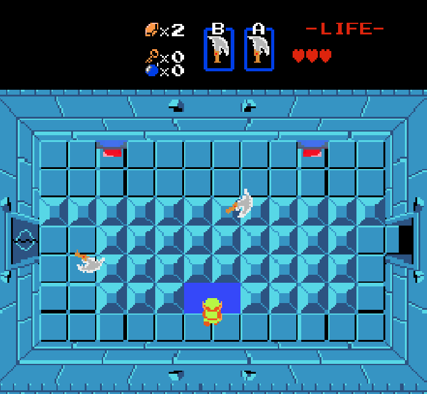

Legend of Zelda Remake + “Twin Chain Trial”

This project is a Unity recreation of the first dungeon experience from the original Legend of Zelda, rebuilt with modern, reliable systems while preserving the classic feel. It includes player movement and combat, enemy behaviors, room-to-room transitions, item interactions, and dungeon progression designed to mirror the pacing and readability of the NES original.
After completing the classic dungeon recreation, we extended the game with a custom “P1 Gold” feature: a new weapon mechanic inspired by the Blade of Chaos, and a custom dungeon called Twin Chain Trial built to teach and test that mechanic. The goal was to add something novel that changes gameplay decisions, while still feeling consistent with Zelda-style room-based design.
Classic Dungeon Recreation
The classic portion recreates the structure and intention of the original dungeon: clear room identities, enemy-driven pacing, and a sense of progression through locked doors, combat gates, and rewards. The design emphasizes readable encounters, predictable collisions, and snappy combat feedback, so the player understands why they were hit and how to improve on the next attempt.
Twin Chain Trial (Custom Dungeon + New Mechanic)
Twin Chain Trial is a custom dungeon designed around two ideas: a hold-to-extend chained blade attack and simultaneous input activation. Early rooms teach the mechanic without long text by placing an enemy just outside normal sword range, making the “hold” behavior the obvious solution. Later rooms increase the difficulty by combining spaced enemies, commitment windows, and puzzles that require activating two targets at the same time to open doors.
This changes the way the game is played by shifting combat from quick taps and constant movement toward deliberate positioning and commitment-based decisions. Extending the blade increases range and utility, but creates vulnerability windows where the player must plan their spacing carefully. The simultaneous activation puzzles reinforce control mastery under pressure and create moments where timing matters as much as positioning.
My Contributions
Gameplay & systems: combat systems, knockback logic, enemy AI state machines, and debugging timing/physics edge cases.
Sprite & animation logic: full player/enemy sprite animation system including directional sprite sets, walk/idle/attack transitions, frame timing, and hit-feedback visuals (hurt/flash behavior).
Custom content: implementation of the chained-blade mechanic (hold-to-extend + retract), simultaneous activation logic, and the Twin Chain Trial dungeon layout designed to teach the mechanic through gameplay.
Technology Used
This project was developed in Unity (2D) using C#. Gameplay systems were implemented using Unity’s component-based architecture and extensive use of coroutines to manage timed behaviors such as attack windows, animation sequencing, enemy stun states, projectile lifetimes, and delayed effects. Sprite animation, combat interactions, and input-based abilities were coordinated through coroutine-driven timing rather than relying solely on Update loops.
Play the Web Build
You can play the WebGL build here:
If the build takes a moment to load, that is normal for WebGL projects. For best results, use Chrome or Firefox on desktop.